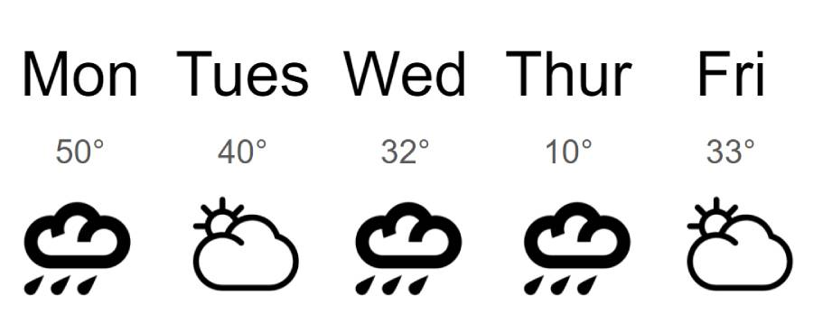

Weather Summary
lfjk sldkfj lsdkfj sldkfj sfkj sldfkj sldkfj sldkfj sldkfj sldkfj sldkfj sldkfjs dlkfj slkjf lsdkfj slkfj sdlkfj sldfkjs ylfjk sldkfj lsdkfj sldkfj sfkj sldfkj sldkfj sldkfj sldkfj sldkfj sldkfj sldkfjs dlkfj slkjf lsdkfj slkfj sdlkfj sldfkjs ylfjk sldkfj lsdkfj sldkfj sfkj sldfkj sldkfj sldkfj sldkfj sldkfj sldkfj sl
Article
lfjk sldkfj lsdkfj sldkfj sfkj sldfkj sldkfj sldkfj sldkfj sldkfj sldkfj sldkfjs dlkfj slkjf lsdkfj slkfj sdlkfj sldfkjs ylfjk sldkfj lsdkfj sldkfj sfkj sldfkj sldkfj sldkfj sldkfj sldkfj sldkfj sldkfjs dlkfj slkjf lsdkfj slkfj sdlkfj sldfkjs ylfjk sldkfj lsdkfj sldkfj sfkj sldfkj sldkfj sldkfj sldkfj sldkfj sldkfj sldkfjs dlkfj slkjf lsdkfj slkfj sdlkfj sldfkjs ylfjk sldkfj lsdkfj sldkfj sfkj sldfkj sldkfj sldkfj sldkfj sldkfj sldkfj sldkfjs dlkfj slkjf lsdkfj slkfj sdlkfj sldfkjs y lfjk sldkfj lsdkfj sldkfj sfkj sldfkj sldkfj sldkfj sldkfj sldkfj sldkfj sldkfjs dlkfj slkjf lsdkfj slkfj sdlkfj sldfkjs y